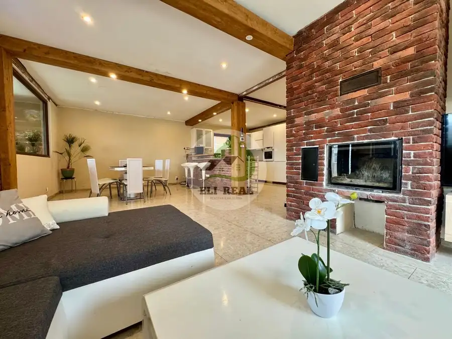
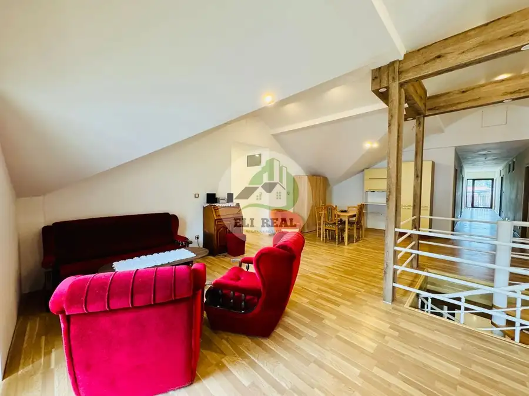
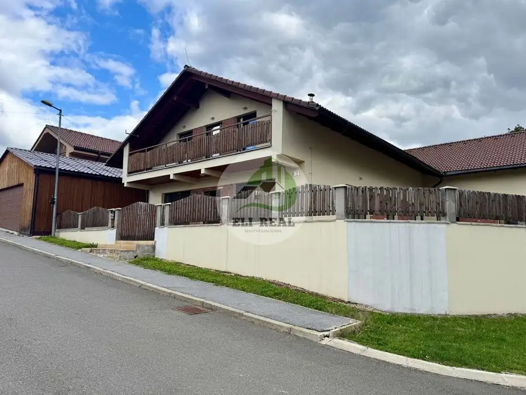
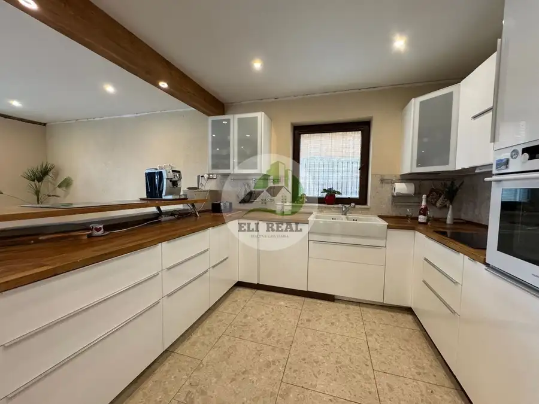

Rodinná vila - Ploské (KE), 10 izieb, fitness, bazén, priprava na wellness.. aj na PODNIKANIE
Ploské




- Plocha500 m²
- StavČiastočná rekonštrukcia
- VlastníctvoOsobné
- Energetická triedaA
O nehnuteľnosti
Možná VÝMENA za menší DOM poprípade 2 i BYT s doplatkom 100-200 tis. Závisi od ponúkanej nehnuteľnosti. Lokalita Košice - dostupnosť MHD a občianskej vybavenosti alebo Bardejove, Bardejovské kúpele. Jedinečná príležitosť pre INVESTOROV a PODNIKATEĽOV. Lokalita Ploské - Ortáše.VIDEO: tento link skopírujte do google prehliadača: youtu.be/6jZBhWJEsxM?si=vUolKgsUYHoOmq75Ponúkame na predaj priestranný rodinný dom s celkovou rozlohou 2 × 250 m² (prízemie a poschodie), ktorý je ideálny nielen na komfortné rodinné bývanie, ale aj na podnikateľské účely. Skolaudovaný 2024. Rozloha rovinatého pozemku 700 m2. Možnosť dokúpiť pozemok oproti domu 255 m2 (pod lesom ) za doplatok. DISPOZÍCIA DOMU:Prízemie: moderná kuchyňa spojená s obývacou izbou a jedálňou, kúpeľňa, 2 samostatné izby, fitness a miestnosť pripravená na wellness.Poschodie (so samostatným vstupom): veľká obývacia miestnosť s kuchyňou, 8 samostatných izieb s vlastným sociálnym zariadením – ideálne na prevádzku penziónu, ubytovania či firemného sídla. Horná časť domu nie je dokončená - možnosť si ju dokončiť podľa vlastných predstáv, potrieb.. TECHNICKÉ VYBAVENIE A ŠTANDARD:kompletné IS: vodovod, ČOV, plyn, elektrina,podlahové plynové kúrenie na oboch podlažiach,podlaha z talianskeho mramoru,energický certifikát AAA+dom sa predáva čiastočne zariadený vrátane niektorých strojov vo fitness,bazén, ktorý stačí už len obložiť – veľký potenciál pre relax alebo wellness služby.zavlažovacie zariadenie trávnikakamerový systém - 4 kameryautomatická kosačka v cene skład náradia na pozemku VÝHODY A MOŽNOSŤ VYUŽITIA.Penzión alebo menší hotelFiremné alebo coworkingové centrum s ubytovaním pre zamestnancovDvojgeneračné bývanieRehabilitačné a wellness centrum s fitness a bazénomKombinácia bývania a podnikania pod jednou strechouSidło firmy, kancelárię..Tento dom ponúka priestor pre každého podnikateľa s víziou – vďaka priestrannosti, samostatnému vstupu na poschodie a možnosti prispôsobiť priestory podľa vlastných potrieb.Ak máte víziu podnikania z domu, tento dom je ideálny pre Vás. Kontaktujte ma a rada Vám ho ukážem aj osobne. Pôvodná cena 669 990 eur. AKTUÁLNA CENA na 465 000 eur. . Andrea Eliašová 0907 946 726eliasova@elireal.sk
Parametre
- Bezpečnosť
- Kamerový systém
- Doprava
- Diaľkový autobus
- Druh
- Rodinný dom
- Druh domu
- Rodinná vila
- Dátum zverejnenia
- 30. 09. 2025
- Energetický certifikát budovy
- A
- Energie
- 300
- Plocha pozemku
- 700 m²
- Počet balkónov
- 2
- Počet izieb / miestností
- 10
- Počet nadzemných podlaží
- 2
- Počet vonkajších parkovacích miest
- 4
- Prístupová komunikácia
- Asfaltová
- Rok kolaudácie
- 2024
- Rok poslednej rekonštrukcie
- 2024
- Rok výstavby
- 2015
- Stav nehnuteľnosti
- Čiastočná rekonštrukcia
- Telekomunikácie
- Optická sieť
- Terás
- 1
- Terén pozemku
- Rovinatý
- Typ
- Predaj
- Typ konštrukcie
- Zmiešaná
- Vlastníctvo
- Osobné
- Vybavenie
- Balkón, Terasa, Vonkajšie parkovacie miesto, Sklad, Záhrada, Fitnes, Bazén, Krb
- Vybavenie objektu
- Zariadený so spotrebičmi
- Vykurovanie
- Podlahové
- Zariadenie
- Čiastočne zariadené
- Zastavaná plocha
- 290 m²
- Úžitková plocha
- 500 m²